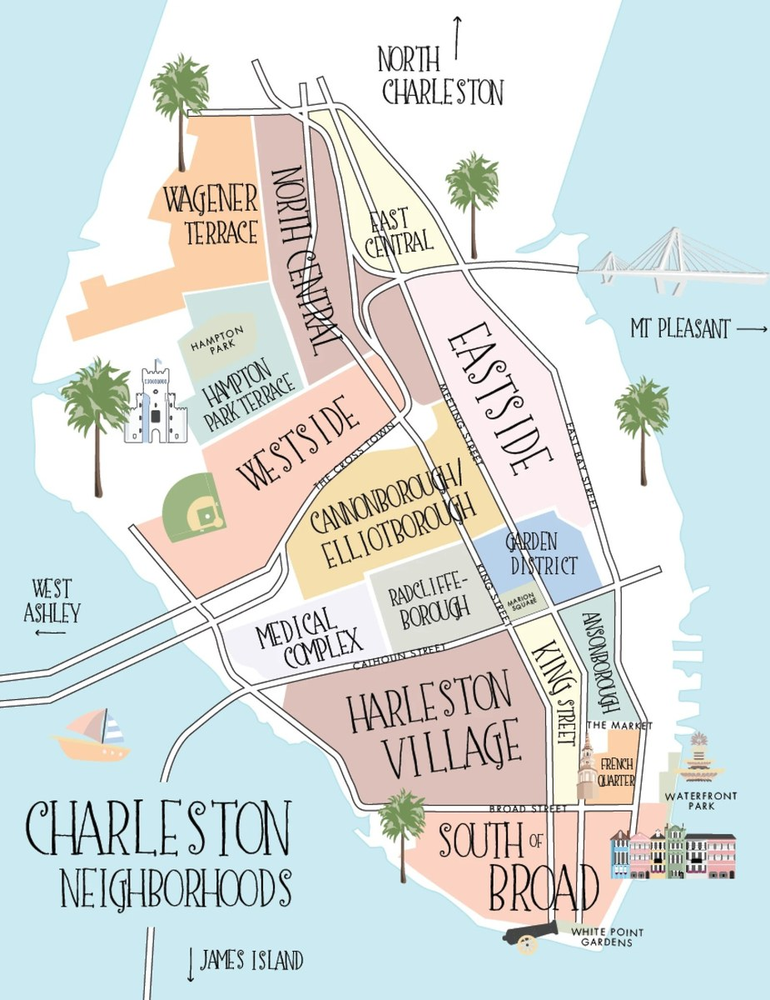

Neighborhoods, Real Estate & Life in the Lowcountry
Charleston isn't one place. It's a collection of distinct neighborhoods, each with its own character, price point, flood risk, commute reality, and vibe. Move to the wrong one and you'll spend years feeling slightly off. Move to the right one and you'll wonder how you lived anywhere else.
This guide is built from years of living here, running a local media brand, and closing real estate deals across every corner of the Charleston area. It's what we wish someone had handed us when we first moved here.
No fluff. No tourism copy. Just the real picture of each neighborhood — what it costs to own a home here, what it feels like, and who it's right for.
Commercial real estate in DC. Residential in Charleston. 725 transactions and $1.2 billion later, I've learned one thing that matters more than anything else: the right neighborhood changes everything.
Get that decision right and the rest gets easier. Get it wrong and no amount of beautiful finishes fixes it.
That's why this guide exists — and why I put my name on it.
Selling a home? The Farrell Group recently launched the Modern Listing Model — a new approach to seller representation built for how real estate actually works today. Transparent, efficient, and genuinely aligned with your interests. Learn more →
12 distinct neighborhoods. One peninsula. Each earns its own chapter.
The Peninsula is where Charleston was born and in many ways still where Charleston lives. Flooding is real on much of it. Parking is a daily negotiation. Tourists are part of the landscape. But for those who plant themselves here, there's nothing quite like it anywhere — walkability, history, architecture, and community all in one package no suburb can replicate.

Charleston's most iconic address. Museum-quality streets, grand piazzas, centuries-old homes, harbor breezes, and White Point Garden at the tip of the Peninsula. This is Charleston at its most concentrated — and most expensive.
More varied, more alive, and less stuffy than South of Broad. Colonial Lake — a beautiful urban lake with gardens, tennis and pickleball, and daily runners — is the neighborhood's living room. One of the most genuinely livable neighborhoods on the Peninsula.
Charleston's most tourism-dense residential neighborhood. Cobblestone streets, art galleries, gas lanterns. The cruise ships are gone (summer 2026 marks the end of all operations) — but tourism remains constant and intense. Ground zero for Charleston's visitor experience.
Quieter, more residential version of the French Quarter. Historic architecture, cobblestone streets, genuinely neighborly feel. Close to everything without being overwhelmed by it.
The most public green space of any downtown neighborhood and the only one where you regularly find the "trifecta": a historic home, parking, and no flooding — all three in one place. Rare on the Peninsula.
The sweet spot between French Quarter tourist intensity and Garden District calm. Heavy rental stock but in an energetic way. Widest price range on the Peninsula, $289K to $4.5M sold, and $401 to $1,088 a foot.
The most independently-spirited neighborhood on the Peninsula. The best concentration of chef-driven restaurants and locally-owned boutiques anywhere downtown. Well past any transitional phase. This neighborhood arrived.
The most historically significant neighborhood on the Peninsula — and the most honest one to write about. The 1945 Cigar Factory strike, one of the most important labor actions in the South, happened here. The neighborhood is changing, and that comes with complexity.
Diverse, community-oriented, genuinely local. Historic cottages and Charleston singles from the 1920s-30s. Brittlebank Park — Ashley River views, fishing pier, walking trail, yoga — is a real asset. The Citadel adds institutional character without campus noise.
Craftsman cottages and bungalows, many renovated or mid-renovation. Genuinely mixed — longtime residents alongside young professionals and newcomers. Neighborly and pedestrian-friendly. The Lowcountry Lowline greenway threading through is a forward-looking asset.
An absolutely appealing neighborhood — one of the best discoveries for buyers who do their homework. Developed 1911-1913. Architecture unlike anything in the historic core: Foursquare, Craftsman, Colonial Revival, Prairie, bungalow. Homes with yards. Many with parking. Not in the tourist zone.
The larger sibling of Hampton Park Terrace — same era, same DNA, bigger lots, Ashley River marshes as western backdrop. Most active neighborhood association on the Peninsula. Where people who've discovered the upper Peninsula tend to land.
Laid-back, unpretentious, deeply local. One of the largest residential markets in Charleston County.
Established island neighborhoods built primarily in the 1940s-60s — ranch homes, split levels, brick bungalows, cottages on large lots draped in Spanish moss. This is what Charleston looked like before the money arrived, and longtime residents consider that a feature.
The largest island on the East Coast. One of the fastest-growing communities in the region. World-class food scene.
Still has genuine Lowcountry character, but the rural oasis description is increasingly a memory. Development is active and ongoing — Maybank Highway is busier every year.
4,000 acres. Two championship golf courses. Credit One Stadium. 8-day median DOM.
A 4,000-acre master-planned community between the Cooper and Wando Rivers. New Urbanist design at a genuinely high level: wide sidewalks, kids biking to school, golf carts everywhere, eight parks throughout. Impeccably maintained. The "Truman Show" comparison is earned — and for the right buyer, that's exactly the point.
"Charleston's Williamsburg." Bohemian, walkable, fiercely independent. The most talked-about neighborhood in the Lowcountry right now.
A Garden City neighborhood built in 1912, originally working-class housing for naval base workers. Genuinely quirky and intentionally lo-fi — the kind of place where the local coffee shop knows your name and the neighborhood association actually meets.
Charleston's Jeff Spicoli. Stilt houses, no cookie-cutter, fiercely protective residents.
Scrappy, colorful, unapologetically itself. Stilt houses, historic cottages, artistic bungalows — nothing cookie-cutter, no high-rises. Residents who are fiercely protective of what makes Folly different from everywhere else.
South Carolina's most exclusive residential beach community. No STRs. No hotels. Deliberate.
No high-rises. No big-box retail. Golf carts and bikes. Neighbors who know each other. A 3.3-square-mile island at the mouth of Charleston Harbor with about 2,000 year-round residents who chose this deliberately.
More energetic and accessible than Sullivans. Six miles of beach. Wild Dunes anchors the north end.
Where Sullivans Island is intentionally exclusive and residential, Isle of Palms is its more accessible, more energetic, more commercially active neighbor. Six miles of wide sandy beaches. A genuine year-round residential community alongside a robust vacation rental market. IOP has made peace with its dual identity — part neighborhood, part resort town.
Inside I-526 feels like Charleston. Outside I-526 feels like suburbia. Both have genuine appeal — for very different buyers.
West Ashley is the most populous part of Charleston — nearly half the city's population lives here. The experience varies dramatically depending on where inside it you land.
The most distinctive close-in West Ashley neighborhood. Brick ranches, cottages, and bungalows on smaller lots with genuine character. Walkable to an independently-owned restaurant and bar strip on Savannah Highway. Five minutes to downtown.
Slightly larger homes than Avondale on winding tree-lined streets, many with marsh views along Wappoo Creek. Same five-minute location. South Windermere Center is the community hub — Earth Fare, local dining, the West Ashley Library, boutique retail — all walkable.
One of the largest master-planned communities in the Charleston area. The greenery preservation was intentional — this doesn't feel like a typical cleared-lot subdivision. Three pools, dog park, canoe launch, nature trails through preserved wetlands, covered pavilion. Modern floor plans, newer construction. Family-oriented.
Outer West Ashley — past I-526. Grand Oaks Plantation anchors it: 11 sub-neighborhoods off Bees Ferry Road, ~1,000 homes, each sub with its own pool and amenities. Golf cart community. Bees Landing Recreation Center (25 acres, 18,000 sqft) is right there. Most space per dollar in the Charleston area.
The most recognizable suburban community in Charleston. South of the IOP Connector is closer in and more expensive. North is newer and more accessible.
The original heart of Mount Pleasant — and still its most coveted address. Historic homes, narrow streets shaded by live oaks, golf carts as standard transport. Walkable to Pitt Street's small commercial district. Residents here are proud of where they live — and homes are expensive.
One of the first New Urbanist year-round residential communities in the United States. Strictly controlled architecture — Charleston singles, piazzas, traditional Lowcountry vernacular. Two lakes connected by canals and footbridges, marsh views, parks distributed throughout. In-demand and exclusive.
One of Mount Pleasant's original established neighborhoods — built from the 1970s on the grounds of the 200-year-old Snee Farm Plantation. Large lots, mature trees, quiet streets, ~900 single-family homes. Central to everything in Mount Pleasant.
A beautiful, walkable community just south of the IOP Connector — the last South Mount Pleasant neighborhood before you cross into North territory. Diverse housing including single-family and some high-end townhomes. Walkable to the Shoppes at Seaside Farms.
Route 17 traffic is a real daily consideration. Two infrastructure projects are beginning to address it — but plan for it regardless.
Well-established, beautiful community heading north — newer housing stock than Snee Farm but the same quality feel. Rivertowne Country Club is the centerpiece — ClubCorp network with dual membership options at Snee Farm. Access to 200+ private clubs worldwide.
One of the most amenity-rich gated communities in the entire Charleston region. Arthur Hills-designed golf course ranked among Golf Digest's Top 50. Private boat ramp on the Wando River. Deep-water estate lots at the top end.
Mount Pleasant's largest master-planned community. What sets it apart: 250 acres of saltwater marsh and 292 acres of freshwater wetlands preserved throughout. Three top-rated public schools built within the community's boundaries. Town of Mount Pleasant operates a 59-acre Recreation Complex inside Park West — a public amenity that adds value beyond what the HOA provides.